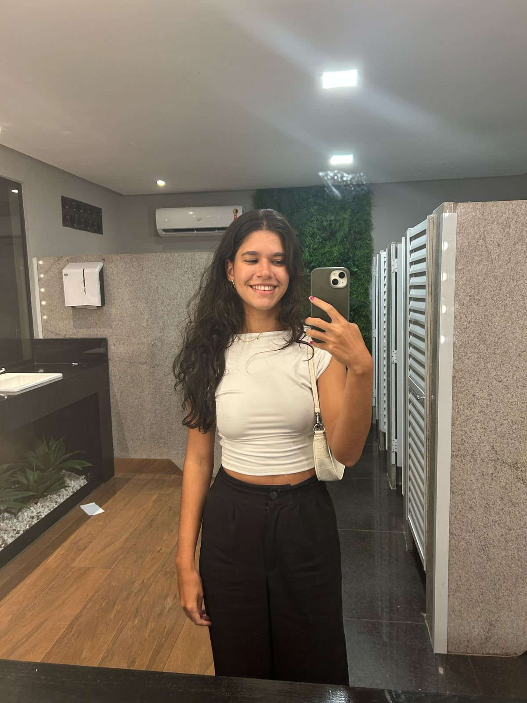

História
Meu nome é Tainá Ramos de Jesus Meirelles, tenho 19 anos e estou cursando Ciência da Computação na UVV. Eu sou capixaba, cristã, moro com meus pais, meus dois irmãos, meu primo e tenho um gato, chamado Dexter.
Objetivo profissional
Meu objetivo profissional, no momento, é me capacitar para conseguir trabalhar em alguma empresa estrangeira, talvez na área de cyberseguraça ou de inteligência artificial.
Habilidades pessoais
- Html5
- Css3
- SQL
- Lógica de programação
Hobby
Eu amo ir à praia, estou frequentemente servindo na igreja, vou na academia e amo assistir séries/filmes.
Vida acadêmica
Eu estudei do maternal ao ensino médio na Escola SEB - Vila Velha, sempre tive mais facilidade na área de exatas, durante a escola estudei para algumas federais como IFES e UFES, no início de 2025 fui aprovada em Ciência da Computação na UFES, entretanto permaneci na UVV.
UVV
Matérias
- Contrução de Software para Web ⇨ Ensina como criar sites, através de HTML, CSS, JavaScript e etc.
- Banco de dados ⇨ Modelagem e criação de banco de dados com SQL.
- Ux Design ⇨ Aborda sobre design de interfaces que apresentem usabilidade, acessibilidade e eficiência.
- Fundamentos da computação ⇨ Ensina a base da computação, lógica para programação e algumas linguagens, como C.
- Lógica da computação ⇨ É a lógica matemática, o raciocínio computacional.
Projeto
Esse projeto tem por finalidade testar meus aprendizados em desenvolvimento web, sobretudo utilizando HTML e CSS. Ele deve sofrer algumas alterações ao decorrer do tempo, pois pretendo continuar em constante aprendizado.
GitHub aqui ↓